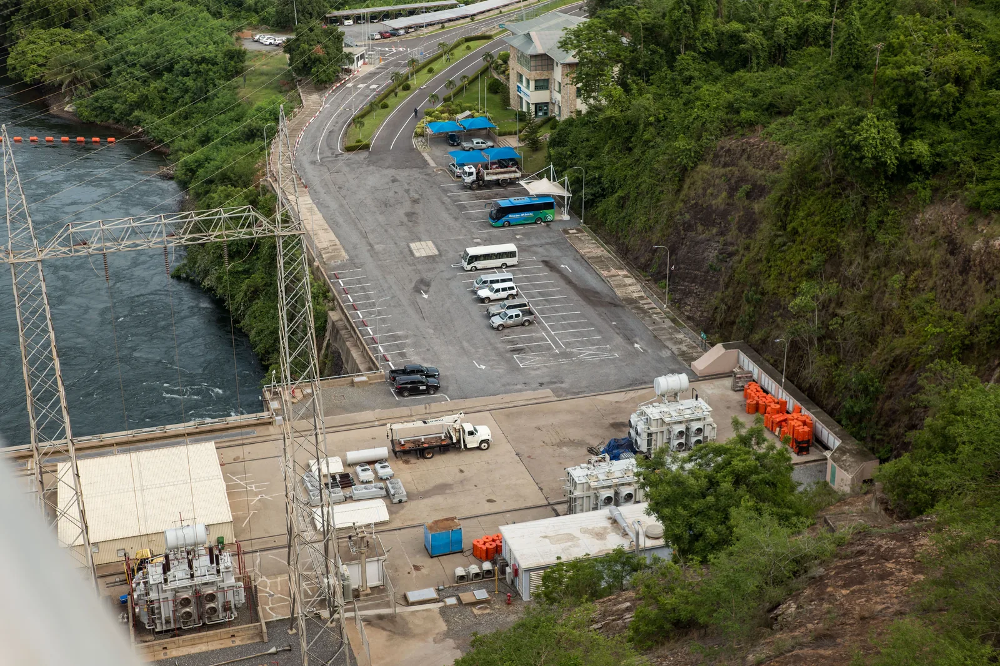

Forms of energy and conservation of energy
Why does a bouncing ball eventually come to rest on the floor?
Prior knowledge
- The prefix kilo means a thousand, so $1\,\text{kJ} = 1000\,\text{J}$chapter Quantities, units and the SI system
Core path: follow the steps in order. Besides calculations, the core path includes investigations, explanations and graphs. Tasks marked Optional give extra practice. Optional tasks: 1.
Think about it
A bouncing ball is dropped on the floor. The first bounce rises almost as high as the height from which the ball was dropped, the next bounce is lower and the next one lower still. In the end the ball lies still on the floor. At the start the ball had a lot of energy high up, but at the end it is neither high up nor moving.
Where did the energy of the ball go?
Predict
Make your predictions before investigating 2 questions
Prediction 1: half-pipe without friction
Prediction 2: why the motion stops
Investigate
In the simulation a $50\,\text{kg}$ skateboarder starts from rest from height $h_0$ on the wall of a half-pipe. The bar and the graph show the potential energy, kinetic energy and thermal energy in joules.
Simulation
How to use
Press Start and watch the motion and energies of the skateboarder. You can also drag the Moment $t$ slider and stop the picture at any moment you like. Choose Friction (none, small or large) as well as Initial height $h_0$ and Speed. The blue part of the bar is $E_\text{p}$, the orange part $E_\text{k}$ and the red striped part $E_\text{thermal}$. The dashed line next to the bar shows the total energy.
Assumptions of the model
The values are model values calculated by the simulation, not measurements. The mass of the skateboarder is $50\,\text{kg}$, and she starts from rest from height $h_0$ on the wall of the half-pipe. The edges of the half-pipe are $3.0\,\text{m}$ high, and the zero level is the bottom. Air resistance is ignored. On every metre of sliding, friction changes the same amount of the energy of motion into thermal energy, so the longer the distance the skateboarder slides, the more energy is changed into thermal energy.
How the calculation works
The simulation calculates the motion of the skateboarder in small time steps. The potential energy is calculated from the height, the kinetic energy from the speed and the thermal energy from how much friction has changed the energy of motion along the way. The formulas for these are not needed in this chapter. The three energies are calculated separately and only then added together, so the sum staying the same is a result of the calculation, not an assumption. The numbers shown are rounded to whole joules.
Experiment 1: half-pipe without friction
Test prediction 1. The initial state selects a half-pipe without friction and an initial height of $2.0\,\text{m}$ and sets the clock to zero. Move the Moment $t$ slider and record the energies at at least three moments, for example $t = 1.0\,\text{s}$, $t = 2.0\,\text{s}$ and $t = 3.0\,\text{s}$. At $t = 1.0\,\text{s}$ the skateboarder is near the bottom. The energies are in joules, and the column $E$ is the sum of the three energies. See what it tells you.
Initial state: friction: no friction, initial height $h_0$ = $2{.}0\,\text{m}$, $t$ = $0\,\text{s}$. Kept constant: friction, initial height $h_0$. Varied: $t$.
| $t$ | $E_\text{p}$ | $E_\text{k}$ | $E_\text{thermal}$ | $E$ |
|---|
Experiment 2: with friction
Test prediction 2. The initial state selects small friction and an initial height of $2.0\,\text{m}$ and sets the clock to zero. Move the Moment $t$ slider and record the energies at at least three moments, for example $t = 0\,\text{s}$, $t = 8.0\,\text{s}$ and $t = 16.0\,\text{s}$. The energies are in joules, and the column $E$ is the sum of the three energies. Compare the mechanical energy $E_\text{p} + E_\text{k}$ and the thermal energy on the rows.
Initial state: friction: small friction, initial height $h_0$ = $2{.}0\,\text{m}$, $t$ = $0\,\text{s}$. Kept constant: friction, initial height $h_0$. Varied: $t$.
| $t$ | $E_\text{p}$ | $E_\text{k}$ | $E_\text{thermal}$ | $E$ |
|---|
Example data: the bouncing ball
Simulated example data
A rubber ball is dropped on the floor. The table shows the mechanical energy of the ball when dropped and after each bounce (simulated example data, not a real experiment). The ball and the floor form an isolated system, and sound is ignored.
| Bounces | Mechanical energy $E_\text{mech}\ (\text{J})$ |
|---|---|
| $0$ | $0.60$ |
| $1$ | $0.48$ |
| $2$ | $0.38$ |
| $3$ | $0.31$ |
How much mechanical energy has changed into thermal energy during three bounces? Answer in joules.
Hint 1: a guiding question
What happens to the mechanical energy and the thermal energy during a bounce? Where does the energy that leaves the mechanical energy go?
Hint 2: what is the connection
Energy is conserved, so the decrease of the mechanical energy equals the increase of the thermal energy: $E_\text{thermal} = E_\text{initial} - E_\text{mech}$, where $E_\text{mech}$ is the mechanical energy of the ball at the end.
Hint 3: an intermediate step
Read the starting value ($0$ bounces) and the final value ($3$ bounces) from the table and subtract: $0.60\,\text{J} - 0.31\,\text{J}$.
Show the solution
Given
mechanical energy when dropped $E_\text{initial} = 0.60\,\text{J}$ and after three bounces $E_\text{mech} = 0.31\,\text{J}$ (from the table, simulated example data)
Find
energy changed into thermal energy $E_\text{thermal}$ in $\text{J}$
Principle
The ball and the floor form an isolated system, so energy is conserved: $E_\text{initial} = E_\text{final}$. The mechanical energy that the ball is missing has not disappeared but has changed into thermal energy.
Formula
$E_\text{initial} = E_\text{mech} + E_\text{thermal}$, so $E_\text{thermal} = E_\text{initial} - E_\text{mech}$
Conversions
All energies are in joules, so no conversions are needed.
Substitution
Answer
$0.29\,\text{J}$
Two significant figures and two decimal places like the values in the table.
Reasonableness
After three bounces there is still $0.31\,\text{J}$ of mechanical energy, and $0.31\,\text{J} + 0.29\,\text{J} = 0.60\,\text{J}$ is the initial energy. In each bounce about a fifth of the remaining energy changes into thermal energy ($0.12\,\text{J}$, $0.10\,\text{J}$, $0.07\,\text{J}$), and these three together are $0.29\,\text{J}$.
Conclusion from the experiments
Write a conclusion based on your experiments: What happened to the potential energy and the kinetic energy? What did friction change? What happened to the total energy? Use the numbers from your tables.
Model answer
According to the values of the simulation model, the total energy stayed the same, $981\,\text{J}$, all the time in the frictionless half-pipe. At $1.0\,\text{s}$ it was $E_\text{p} = 63\,\text{J}$ and $E_\text{k} = 918\,\text{J}$, at $2.0\,\text{s}$ correspondingly $862\,\text{J}$ and $119\,\text{J}$, and at $3.0\,\text{s}$ $424\,\text{J}$ and $557\,\text{J}$. When the potential energy decreased, the kinetic energy increased by the same amount. With small friction the mechanical energy $E_\text{p} + E_\text{k}$ decreased: it was $981\,\text{J}$ at $0\,\text{s}$, $469\,\text{J}$ at $8.0\,\text{s}$ and $143\,\text{J}$ at $16.0\,\text{s}$. At the same time the thermal energy grew from zero to $512\,\text{J}$ and to $838\,\text{J}$, so the total energy stayed $981\,\text{J}$. So the energy was not lost but changed into thermal energy through friction. The numbers are model values, not measurements.
Assess your own answer
Tick the points your own answer already contains.
Review the theory summary and practise with the exercises.
Theory summary
Key idea
Energy is a quantity used to describe what happens in a system when something moves, warms up, gives off light or changes its form. The symbol for energy is $E$ and its unit is the joule, $\text{J}$. The joule is a small unit, so energies are often given in kilojoules too: the prefix kilo means a thousand, so $1\,\text{kJ} = 1000\,\text{J}$.
Energy comes in many forms, and each form is called a form of energy. The form of energy tells you where the energy is stored or how it shows itself.

Seven forms of energy
- Potential energy $E_\text{p}$ is energy that depends on the position of an object, here gravitational potential energy. The higher an object is and the greater its mass, the more potential energy it has. A ball at the edge of a shelf can pick up speed as it falls.
- Kinetic energy $E_\text{k}$ is the energy of a moving object. The faster an object moves and the greater its mass, the more kinetic energy it has. An object at rest has none.
- Thermal energy $E_\text{thermal}$ is energy linked to the motion of the particles of a substance and to the interactions between them. When an object warms up, its particles move more and its thermal energy increases. Thermal energy also depends on the amount of substance, so it is not the same thing as temperature. The word heat, on the other hand, means in physics energy that is transferred because of a temperature difference: the net transfer of energy is from the warmer object to the colder one. An object has thermal energy, and energy is transferred from one object to another as heat.
- Chemical energy is energy stored in the chemical bonds of substances. It is found in food, fuels and batteries, and it is released in, for example, combustion and metabolism.
- Radiant energy is energy carried by radiation, for example sunlight. It also travels through a vacuum.
- Electrical energy is energy transferred by an electric current, for example in the electricity grid.
- Nuclear energy is energy stored in atomic nuclei. It is released in nuclear reactions, which take place in a nuclear power plant and in the Sun.
Potential energy and kinetic energy together make up mechanical energy, $E_\text{mech} = E_\text{p} + E_\text{k}$.
Energy changes form
Energy does not stay in the same form. In a torch (flashlight), the chemical energy of the battery changes into electrical energy, and the bulb changes the electrical energy into light and thermal energy. In an incandescent bulb, most of the energy changes into thermal energy and only a small part into light.
There are similar changes everywhere. A plant changes the radiant energy of the Sun into chemical energy. A muscle changes chemical energy into kinetic energy and thermal energy. In a nuclear power plant, nuclear energy finally changes into electrical energy.
Law of conservation of energy
In all these changes the total amount of energy stays the same: energy is neither created nor destroyed, but changes form or moves from one place to another. This is a universal principle of physics, the law of conservation of energy. We look at an isolated system, which receives no energy from outside and loses none to the outside. Then the total energy of the system is the same at the start and at the end:
$$E_\text{initial} = E_\text{final}$$
where $E_\text{initial}$ is the sum of the energies of all forms of energy in the system at the start and $E_\text{final}$ is their sum at the end. Both are given in joules ($\text{J}$).
The sum includes all forms of energy, thermal energy too. When a skateboarder slides from the edge of a half-pipe to the bottom and friction acts, the mechanical energy $E_\text{p} + E_\text{k}$ decreases, but the thermal energy $E_\text{thermal}$ increases by the same amount. The sum $E_\text{p} + E_\text{k} + E_\text{thermal}$ does not change. So friction does not create energy: it changes mechanical energy into thermal energy, and the wheels, the ramp and the air warm up a little.
Using up energy is changing energy
In everyday language energy is "used up", but in physics it does not run out. When a device uses energy, it changes energy from one form to another. Most often the largest part changes into thermal energy, which is transferred as heat into the surroundings and is hard to use any more. In short, people often say that energy "changes into heat". This is why it is worth saving energy even though it cannot be destroyed.
Common misconception
Energy does not disappear or get used up. When a ball stops or a device uses energy, the energy has changed into another form, usually thermal energy that has been transferred as heat into the surroundings. Another mistake is to calculate only the mechanical energy. In motion with friction $E_\text{p} + E_\text{k}$ decreases, but the total energy stays the same when thermal energy is included. Friction does not create energy but changes it from one form to another.
Summary
- The symbol for energy is $E$ and its unit is the joule $\text{J}$; $1\,\text{kJ} = 1000\,\text{J}$.
- The forms of energy are potential energy, kinetic energy (together mechanical energy), thermal energy, chemical energy, radiant energy, electrical energy and nuclear energy.
- Energy changes form and moves but is neither created nor destroyed: in an isolated system $E_\text{initial} = E_\text{final}$.
- Friction does not create energy but changes mechanical energy into thermal energy: $E_\text{p} + E_\text{k}$ decreases, but the total energy does not change.
- An object has thermal energy; heat is energy that is transferred because of a temperature difference, net from the warmer object to the colder one.
- Using up energy means changing it into a form that is hard to use, usually thermal energy.
Return to your predictions
Compare your predictions with the tables and the graph. What did you find out about the conservation of energy? Also return to the bouncing ball at the start: where did its energy go?
Would you change your prediction?
Apply
Worked example
Problem
A skateboarder starts from rest at the edge of a half-pipe. At the edge her potential energy is $840\,\text{J}$, when the zero level is the bottom of the half-pipe. At the bottom her kinetic energy is $0.72\,\text{kJ}$. The skateboarder, the half-pipe and the surroundings form an isolated system. How much energy has friction changed into thermal energy during the slide?
Step 1/7
Given and find. At the start the potential energy is $E_\text{p} = 840\,\text{J}$ and the kinetic energy is zero, because the skateboarder is at rest. At the bottom the potential energy is zero and the kinetic energy is $E_\text{k} = 0.72\,\text{kJ}$. We want the amount of mechanical energy $E_\text{thermal}$ that friction changes into thermal energy during the slide.
Step 2/7
Principle. The system is isolated, so energy is conserved: $E_\text{initial} = E_\text{final}$. At the start all the energy is potential energy. At the bottom it is divided between kinetic energy and thermal energy, into which friction has changed part of it.
Step 3/7
Rearranged formula. At the start there is only $E_\text{p}$, and at the end there are $E_\text{k}$ and $E_\text{thermal}$:
$$\begin{aligned} E_\text{initial} &= E_\text{final} \\ E_\text{p} &= E_\text{k} + E_\text{thermal} \\ E_\text{thermal} &= E_\text{p} - E_\text{k} \end{aligned}$$
Step 4/7
Unit conversions. The kinetic energy is given in kilojoules and the potential energy in joules. The prefix kilo means a thousand, so it is put in place of the unit:
Step 5/7
Substitution. $$\begin{aligned} E_\text{thermal} &= E_\text{p} - E_\text{k} \\ &= 840\,\text{J} - 720\,\text{J} \\ &= 120\,\text{J} \end{aligned}$$
Step 6/7
Result. Friction changed $E_\text{thermal} = 120\,\text{J}$ into thermal energy. The result is rounded to tens of joules, because the kinetic energy $0.72\,\text{kJ}$ is given to the nearest ten joules and this limits the precision of the difference.
Step 7/7
Reasonableness. The thermal energy is positive and smaller than the initial energy $840\,\text{J}$, as it should be with friction. The energy is accounted for:
Less than a fifth of the initial energy changed into thermal energy, which is a believable amount on a smooth half-pipe.
Optional Find the error
Apply to a new situation
A cyclist rides up a hill at a constant speed. Chemical energy of $420\,\text{kJ}$ is released in her muscles. The potential energy of her and the bicycle increases by $85\,\text{kJ}$, and the kinetic energy does not change. The rest of the energy changes into thermal energy.
How much energy is changed into thermal energy? Answer in kilojoules.
Hint 1: a guiding question
Into which forms of energy does the chemical energy of the muscles change? Name them all.
Hint 2: what is the connection
Write the law of conservation of energy in words: the chemical energy is the increase in potential energy plus the thermal energy. Solve it for the thermal energy.
Hint 3: an intermediate step
Both energies are in kilojoules, so you can subtract directly: chemical energy minus the increase in potential energy.
Show the solution
Given
chemical energy $E_\text{chem} = 420\,\text{kJ}$, increase in potential energy $E_\text{p} = 85\,\text{kJ}$, change in kinetic energy $0\,\text{kJ}$
Find
energy changed into thermal energy $E_\text{thermal}$ in $\text{kJ}$
Principle
The cyclist, the bicycle and the surroundings form an isolated system, so energy is conserved: $E_\text{initial} = E_\text{final}$. The speed does not change, so the kinetic energy does not change. The chemical energy changes into potential energy and thermal energy.
Formula
$E_\text{chem} = E_\text{p} + E_\text{thermal}$, so $E_\text{thermal} = E_\text{chem} - E_\text{p}$
Conversions
Both energies are in kilojoules and the answer is asked in kilojoules, so no conversions are needed.
Substitution
Answer
$335\,\text{kJ}$
In whole kilojoules, because both energies are given to the nearest kilojoule.
Reasonableness
$85\,\text{kJ}$ ends up as potential energy and $335\,\text{kJ}$ as thermal energy, and together they are $420\,\text{kJ}$, the same as the chemical energy of the muscles. About four times as much energy is changed into thermal energy as into useful energy, and human muscles are known to be inefficient: the cyclist sweats.
Check your understanding
Exit ticket
Answer on your own first and only then open the answer.
- Chemical energy of $5.0\,\text{kJ}$ is released from the battery of a toy car, and the car gains kinetic energy of $1.2\,\text{kJ}$. What does the rest of the energy change into, and how much of it is there?
Answer
Into thermal energy, because energy is conserved:
$E_\text{thermal}$$= E_\text{initial} - E_\text{k}$$= 5.0\,\text{kJ} - 1.2\,\text{kJ}$$= 3.8\,\text{kJ}$ - On an electricity bill you pay for the "used" electrical energy. Why can energy still not be used up?
Answer
Energy does not disappear but changes into another form: a device changes electrical energy into, for example, light, motion and thermal energy. The bill is for the fact that easily usable electrical energy is changed into other forms, finally into thermal energy that spreads into the surroundings.
1. Concept
2. Friction and total energy
3. Calculation
An incandescent bulb takes electrical energy of $2.5\,\text{kJ}$ and changes $0.12\,\text{kJ}$ of it into visible light. The rest changes into thermal energy.
How much energy is changed into thermal energy? Answer in joules.
Hint 1: a guiding question
What does the electrical energy of the bulb change into? What do you know about the light?
Hint 2: what is the connection
The law of conservation of energy: $E_\text{elec} = E_\text{light} + E_\text{thermal}$. Solve it for $E_\text{thermal}$. Finally, check in which unit the answer is asked.
Hint 3: an intermediate step
First convert to joules: $2.5\,\text{kJ} = 2.5 \cdot 1000\,\text{J}$ and $0.12\,\text{kJ} = 0.12 \cdot 1000\,\text{J}$.
Show the solution
Given
electrical energy $E_\text{elec} = 2.5\,\text{kJ}$, visible light $E_\text{light} = 0.12\,\text{kJ}$
Find
energy changed into thermal energy $E_\text{thermal}$ in $\text{J}$
Principle
The bulb changes electrical energy into visible light and thermal energy; the thermal energy warms the bulb and the surroundings, and part of it leaves the bulb as thermal radiation. Energy is neither created nor destroyed, so $E_\text{initial} = E_\text{final}$.
Formula
$E_\text{elec} = E_\text{light} + E_\text{thermal}$, so $E_\text{thermal} = E_\text{elec} - E_\text{light}$
Conversions
The prefix kilo means a thousand, so
Substitution
Answer
$2.4 \cdot 10^{3}\,\text{J}$
Two significant figures, because the electrical energy $2.5\,\text{kJ}$ is given to the nearest hundred joules and limits the difference.
Reasonableness
Only $120\,\text{J} : 2500\,\text{J} \approx 0.05$, about five per cent, changes into visible light, which is typical for an incandescent bulb, and the rest is thermal energy. Checking backwards: $2380\,\text{J} + 120\,\text{J} = 2500\,\text{J}$.
Suggestion: one answer does not show everything you can do, but review the theory summary and do the core exercises.
4. Explain
Explain in your own words why a bouncing ball finally stops even though energy is not lost. Say which forms of energy are involved and what the law of conservation of energy says.
Model answer
When the ball has been dropped, it has potential energy high up. During the fall the potential energy changes into kinetic energy, and in the impact with the floor part of the kinetic energy changes into thermal energy, so the ball and the floor warm up slightly. This is why the next bounce is always lower. Finally the mechanical energy of the ball has changed completely into thermal energy, and the ball is at rest. However, energy has not been lost: in the isolated system formed by the ball, the floor and the air $E_\text{initial} = E_\text{final}$, so the total energy is the same as at the start. Here using up energy means that the useful mechanical energy has changed into thermal energy that has spread into the surroundings.
Assess your own answer
Tick the points your own answer already contains.
Review the theory summary and practise with the exercises.
Review the chapter's concepts
Cards you mark Review later collect in your review deck.
- Radiant energy
- The form of energy that travels from the Sun to the Earth and drives most of the Earth's energy flows.
- Energy
- A central quantity of physics that is conserved in every phenomenon but can be transferred and transformed.
- Joule
- The SI unit of energy.
- Form of energy
- A way of describing in what form energy appears or is stored.
- Kinetic energy
- An object has it because it moves; it grows with the mass and the speed.
- Potential energy
- Stored energy of an interaction; its amount depends on the positions of the objects.
- Mechanical energy
- Kinetic energy and potential energy together.
- Chemical energy
- Energy stored in the interactions of atoms and molecules, released for example in burning.
- Nuclear energy
- Energy of the interactions within atomic nuclei, released in nuclear reactions.
- Electrical energy
- Energy of electric interactions, easy to transfer in the electricity grid.
- Internal energy
- Energy of the motion and interactions of the particles of matter.
- Law of conservation of energy
- Energy is neither created nor destroyed; it can be transferred or transformed from one form to another.
- Energy transfer
- Energy passes from one object or system to another, and the total is conserved.
- Energy diagram
- A diagram that shows the forms of energy and how they transform and are conserved.
- Heat
- Energy transferred because of a temperature difference from a hotter object to a colder one.
- Wasted energy
- Energy that is transformed into a form useless for the device's purpose.
- Useful energy
- The part of the energy taken in by a device that serves the intended purpose.
Exercises
Level 1 · basic practice 8 exercises
One formula or one step of reasoning. Core exercises first, the rest is extra practice.
- Exercise 1-1Core
A stone is at rest high up on a cliff, and its potential energy is $50\,\text{J}$. The stone falls to the ground, where the potential energy is zero. Air resistance is ignored.
What is the kinetic energy of the stone just before it hits the ground?
Answer
$50\,\text{J}$
Show the solution
Given
potential energy of the stone on the cliff $E_\text{p} = 50\,\text{J}$, kinetic energy on the cliff $0\,\text{J}$, potential energy on the ground $0\,\text{J}$
Find
kinetic energy of the stone $E_\text{k}$ just before it hits the ground in $\text{J}$
Principle
Air resistance is ignored, so no energy enters or leaves the system formed by the stone and the Earth. The system is isolated, so energy is conserved: $E_\text{initial} = E_\text{final}$. Without friction no thermal energy is produced.
Formula
At the start there is only potential energy and at the end only kinetic energy: $E_\text{p} = E_\text{k}$, so $E_\text{k} = E_\text{p}$
Conversions
The energy is given in joules and the answer is asked in joules, so no conversions are needed.
Substitution
$E_\text{k}$$= E_\text{p}$$= 50\,\text{J}$Answer
$50\,\text{J}$
Two significant figures as in the potential energy $50\,\text{J}$.
Reasonableness
In the fall the potential energy changes into kinetic energy, and because nothing changes into thermal energy, the amount of energy is the same $50\,\text{J}$ at the start and at the end. The kinetic energy cannot be greater than the initial energy, because energy is not created.
- Exercise 1-2
A plant leaf absorbs radiant energy of $245\,\text{J}$ from the Sun. Through photosynthesis the leaf changes $6.0\,\text{J}$ of it into chemical energy, and the rest changes into thermal energy.
How much energy is changed into thermal energy?
Answer
$239\,\text{J}$
Show the solution
Given
radiant energy absorbed by the leaf $E_\text{rad} = 245\,\text{J}$, chemical energy produced $E_\text{chem} = 6.0\,\text{J}$
Find
energy changed into thermal energy $E_\text{thermal}$ in $\text{J}$
Principle
The leaf changes the absorbed radiant energy into chemical energy and thermal energy, and energy is neither created nor destroyed. By the law of conservation of energy $E_\text{initial} = E_\text{final}$.
Formula
$E_\text{rad} = E_\text{chem} + E_\text{thermal}$, so $E_\text{thermal} = E_\text{rad} - E_\text{chem}$
Conversions
All energies are in joules, so no conversions are needed.
Substitution
$E_\text{thermal}$$= 245\,\text{J} - 6.0\,\text{J}$$= 239\,\text{J}$Answer
$239\,\text{J}$
In whole joules, because the radiant energy $245\,\text{J}$ is given to the nearest joule and this limits the precision of the difference.
Reasonableness
The chemical energy and thermal energy together are $6.0\,\text{J} + 239\,\text{J} = 245\,\text{J}$, as at the start. Only $6.0\,\text{J} : 245\,\text{J} \approx 0.02$, about two per cent, changes into chemical energy, and plants are known to capture only a small part of the energy of sunlight; the leaf warms up in the sun.
- Exercise 1-3
A skater starts from rest at point A on the rim of a half-pipe and slides down a slope with friction, past point B, to point C at the bottom. The bars in the figure show his potential energy and kinetic energy at each point, with the bottom as the zero level of potential energy.
Read the energies from the figure. How much energy has friction changed into thermal energy when the skater has moved from point A to point C?
Answer
$200\,\text{J}$
Show the solution
Given
energies read from the figure at points A and C: $E_\text{p,A} = 700\,\text{J}$, $E_\text{k,A} = 0\,\text{J}$, $E_\text{p,C} = 0\,\text{J}$ and $E_\text{k,C} = 500\,\text{J}$
Find
energy changed into thermal energy $E_\text{thermal}$ between points A and C in $\text{J}$
Principle
The skater, the half-pipe and the air form an isolated system, so energy is conserved: $E_\text{initial} = E_\text{final}$. Friction changes part of the mechanical energy into thermal energy, so at the end the energy is mechanical energy and thermal energy.
Reading the graph
At point A there is only the blue potential-energy bar, and its top is at the gridline $700\,\text{J}$; there is no kinetic energy because the skater is at rest. At point C there is only the orange kinetic-energy bar, and its top is at the line $500\,\text{J}$; there is no potential energy because the bottom is the zero level. The bars of point B are not needed.
Formula
$E_\text{p,A} + E_\text{k,A}$$= E_\text{p,C} + E_\text{k,C} + E_\text{thermal}$so
$E_\text{thermal}$$= (E_\text{p,A} + E_\text{k,A}) - (E_\text{p,C} + E_\text{k,C})$Conversions
All energies are in joules, so no conversions are needed.
Substitution
$E_\text{thermal}$$= (700\,\text{J} + 0\,\text{J}) - (0\,\text{J} + 500\,\text{J})$$= 200\,\text{J}$Answer
$200\,\text{J}$
To the nearest hundred joules, because the lengths of the bars are read from the $100\,\text{J}$ gridlines.
Reasonableness
The mechanical energy decreases from $700\,\text{J}$ to $500\,\text{J}$, as it must on a track with friction. At point B the mechanical energy is $300\,\text{J} + 300\,\text{J} = 600\,\text{J}$, so by then only $100\,\text{J}$ has changed into thermal energy, and the thermal energy grows along the whole way. Check: $500\,\text{J} + 200\,\text{J} = 700\,\text{J}$.
- Exercise 1-4
In each situation, name the form of energy that the energy is in at the start and the useful form of energy that it changes into. a) Firewood burns in a fireplace and warms a room. b) A solar panel produces electricity. c) Water flows down from a reservoir into a turbine that turns a generator.
Answer
a) chemical energy → thermal energy; b) radiant energy → electrical energy; c) potential energy of water → (kinetic energy →) electrical energy
Show the solution
Find
in each situation, the form of energy at the start and the useful form of energy into which the energy changes
Principle
The form of energy tells you where the energy is stored or how it shows itself. In fuels the energy is in chemical bonds, sunlight is radiation, and water high up has potential energy because of its position. Energy does not come from nothing, so the useful energy always comes from the form of energy at the start, and in every change part of it also changes into thermal energy.
Model answer
a) The chemical energy of the wood changes in combustion into thermal energy (and a little light), which warms the room. b) The radiant energy of the Sun changes in the panel into electrical energy; however, most of it changes into thermal energy in the panel. c) The potential energy of the water in the reservoir changes into the kinetic energy of the flowing water, the turbine and generator change it into electrical energy, and a little changes into thermal energy. So the forms of energy at the start are a) chemical energy, b) radiant energy and c) potential energy, and the useful forms of energy at the end are a) thermal energy, b) electrical energy and c) electrical energy.
- Exercise 1-5
A sledge starts from rest at the top of a hill. At the top its potential energy is $600\,\text{J}$, and on the way down friction changes $90\,\text{J}$ of energy into thermal energy. At the bottom of the hill the potential energy is zero.
What is the kinetic energy of the sledge at the bottom of the hill?
Answer
$510\,\text{J}$
Show the solution
Given
potential energy of the sledge at the top $E_\text{p} = 600\,\text{J}$, energy changed into thermal energy by friction $E_\text{thermal} = 90\,\text{J}$, potential energy at the bottom of the hill $0\,\text{J}$
Find
kinetic energy $E_\text{k}$ at the bottom of the hill in $\text{J}$
Principle
The sledge, the hill and the surroundings form an isolated system, so energy is conserved: $E_\text{initial} = E_\text{final}$. At the start all the energy is potential energy, and at the end it is kinetic energy and thermal energy, into which friction has changed part of it.
Formula
$E_\text{p} = E_\text{k} + E_\text{thermal}$, so $E_\text{k} = E_\text{p} - E_\text{thermal}$
Conversions
All energies are in joules, so no conversions are needed.
Substitution
$E_\text{k}$$= 600\,\text{J} - 90\,\text{J}$$= 510\,\text{J}$Answer
$510\,\text{J}$
Three significant figures as in the potential energy $600\,\text{J}$.
Reasonableness
The kinetic energy is smaller than the initial energy $600\,\text{J}$, because part of it changed into thermal energy, as it should with friction. Checking backwards: $510\,\text{J} + 90\,\text{J} = 600\,\text{J}$.
- Exercise 1-6
A charged phone is on a table and is not being used. What form of energy is the energy stored in the battery of the phone?
Answer
Chemical energy
Show the solution
Find
the form of energy of the energy stored in the battery
Principle
The form of energy tells you in what form the energy is. A battery is a device in which energy is stored in the bonds of chemical substances, and it is released as electrical energy when the device is put to use. Kinetic energy belongs to a moving object, potential energy depends on the height of an object, and radiant energy is light and other radiation.
Model answer
Chemical energy. A phone at rest does not move (no kinetic energy), its energy does not depend on height (no potential energy) and it does not emit light (no radiant energy). The energy is in the substances of the battery as chemical energy, and when the phone is used it changes into electrical energy and from that into light, sound and thermal energy.
- Exercise 1-7
A car drives along a level road and brakes to a stop. Which of the following describes correctly what happens to the kinetic energy of the car?
Answer
The kinetic energy changes into thermal energy in the brakes, the tyres and the road, and the total amount of energy stays the same.
Show the solution
Find
what happens to the kinetic energy of the car in braking
Principle
Energy is neither created nor destroyed but changes form: in an isolated system $E_\text{initial} = E_\text{final}$. In braking, friction changes kinetic energy into thermal energy. In everyday language "energy is used up" means in physics that the energy has changed into a form that is hard to use.
Model answer
The correct answer is the first one: the kinetic energy changes into thermal energy in the brakes, the tyres and the road, and the total amount of energy stays the same. When the car has stopped it no longer has kinetic energy, but the same energy is thermal energy in the brake discs, the tyres and the road, which have warmed up a little. The claim that energy disappears or decreases breaks the law of conservation of energy.
- Exercise 1-8Core
A phone is being charged with a charger from a wall socket, and the charger feels warm in the hand. Describe the change of energy as a chain, from the energy coming along the cable from the wall socket to the moment it is in the battery. Use the law of conservation of energy to explain why the charger warms up.
Answer
Electrical energy → (in the charger) electrical energy and thermal energy → chemical energy in the battery; part changes into thermal energy, so the charger warms up, and energy is not lost
Show the solution
Find
the change of energy as a chain from the charger to the battery, and why the charger warms up
Principle
Energy is neither created nor destroyed but changes form: $E_\text{initial} = E_\text{final}$. In every change part of the energy changes into thermal energy, which is transferred as heat to the surroundings.
Model answer
Electrical energy comes from the wall socket. The charger changes it into electrical energy suitable for the battery of the phone, and in the battery the electrical energy is stored as chemical energy. So the chain is electrical energy → electrical energy → chemical energy. The change is not perfect: part of the electrical energy from the wall socket changes into thermal energy in the charger, and that is why the charger warms up and heat is transferred to the surroundings. By the law of conservation of energy, the energy taken from the wall socket equals the chemical energy stored in the battery and the thermal energy together, so no energy has been lost. However, the thermal energy can no longer be used to charge the phone.
Level 2 · applied practice 7 exercises
Two steps, working with measured data, a unit conversion or rearranging a formula. Core exercises first, the rest is extra practice.
- Exercise 1-9Core
An electric scooter sets off. Chemical energy of $3.00\,\text{kJ}$ is released from its battery, and the scooter and rider gain kinetic energy of $2150\,\text{J}$ from it. The rest changes into thermal energy in the battery, the motor and the tyres.
How many joules of energy are changed into thermal energy?
Answer
$850\,\text{J}$
Show the solution
Given
chemical energy released from the battery $E_\text{chem} = 3.00\,\text{kJ}$, kinetic energy of the scooter and rider $E_\text{k} = 2150\,\text{J}$
Find
energy changed into thermal energy $E_\text{thermal}$ in $\text{J}$
Principle
The chemical energy of the battery changes through electrical energy into kinetic energy and thermal energy, and energy is neither created nor destroyed. By the law of conservation of energy $E_\text{initial} = E_\text{final}$.
Formula
$E_\text{chem} = E_\text{k} + E_\text{thermal}$, so $E_\text{thermal} = E_\text{chem} - E_\text{k}$
Conversions
The chemical energy is in kilojoules and the kinetic energy in joules. The prefix kilo means a thousand, so we substitute
$3.00\,\text{kJ}$$= 3.00 \cdot 1000\,\text{J}$$= 3000\,\text{J}$Substitution
$E_\text{thermal}$$= 3000\,\text{J} - 2150\,\text{J}$$= 850\,\text{J}$Answer
$850\,\text{J}$
To the nearest ten joules, because the chemical energy $3.00\,\text{kJ}$ is given to the nearest ten joules.
Reasonableness
$2150\,\text{J} : 3000\,\text{J} \approx 0.72$, a little under three quarters, ends up as kinetic energy and the rest is thermal energy. This suits an electric motor, which is much more efficient than a combustion engine. Checking backwards: $2150\,\text{J} + 850\,\text{J} = 3000\,\text{J}$.
- Exercise 1-10
A child starts from rest at the top of a water slide. At the bottom her kinetic energy is $2400\,\text{J}$, and on the way friction has changed $0.60\,\text{kJ}$ of energy into thermal energy. The bottom is the zero level of potential energy.
What was the potential energy of the child at the top? Answer in kilojoules.
Answer
$3.0\,\text{kJ}$
Show the solution
Given
kinetic energy at the bottom $E_\text{k} = 2400\,\text{J}$, energy changed into thermal energy by friction $E_\text{thermal} = 0.60\,\text{kJ}$, potential energy at the bottom $0\,\text{J}$, the child starts from rest
Find
potential energy $E_\text{p}$ at the top in $\text{kJ}$
Principle
The child, the slide and the water form an isolated system, so energy is conserved: $E_\text{initial} = E_\text{final}$. At the top the child is at rest, so all the energy is potential energy.
Formula
$E_\text{p} = E_\text{k} + E_\text{thermal}$. The formula is already solved for the quantity asked.
Conversions
The answer is asked in kilojoules, and the kinetic energy is in joules. The joule is a thousandth of a kilojoule, so we substitute
$2400\,\text{J}$$= 2400 \cdot 0.001\,\text{kJ}$$= 2.4\,\text{kJ}$Substitution
$E_\text{p}$$= 2.4\,\text{kJ} + 0.60\,\text{kJ}$$= 3.0\,\text{kJ}$Answer
$3.0\,\text{kJ}$
Two significant figures as in the kinetic energy $2400\,\text{J}$, that is $2.4\,\text{kJ}$.
Reasonableness
The initial energy must be greater than the kinetic energy at the bottom, $2.4\,\text{kJ}$, because part changed into thermal energy, and $3.0\,\text{kJ} > 2.4\,\text{kJ}$. Energy changed into thermal energy: $0.60\,\text{kJ} : 3.0\,\text{kJ} = 0.20$, that is a fifth.
- Exercise 1-11
A child sitting on a swing is pulled to the side and released from rest. At the highest point the potential energy of the child and the swing is $0.36\,\text{kJ}$, when the zero level is the lowest point of the swing. The swing keeps swinging in smaller and smaller swings until it stops at the lowest point. Sound is ignored.
How many joules of energy are changed into thermal energy in total?
Answer
$360\,\text{J}$
Show the solution
Given
potential energy at the highest point $E_\text{p} = 0.36\,\text{kJ}$, the swing starts from rest and finally stops at the lowest point, sound is ignored
Find
total energy changed into thermal energy $E_\text{thermal}$ in $\text{J}$
Principle
The child, the swing, its fixings and the surrounding air form an isolated system, so energy is conserved. At the end the swing is at rest at the lowest point, so it has neither kinetic energy nor potential energy. All the initial energy has changed into thermal energy through air resistance and friction in the fixings.
Formula
$E_\text{p} = E_\text{thermal}$, so $E_\text{thermal} = E_\text{p}$
Conversions
The prefix kilo means a thousand, so we substitute
$0.36\,\text{kJ}$$= 0.36 \cdot 1000\,\text{J}$$= 360\,\text{J}$Substitution
$E_\text{thermal}$$= E_\text{p}$$= 360\,\text{J}$Answer
$360\,\text{J}$
Or $3.6 \cdot 10^{2}\,\text{J}$, two significant figures as in the given $0.36\,\text{kJ}$.
Reasonableness
Each swing is lower than the one before, because part of the mechanical energy changes into thermal energy, and finally all $360\,\text{J}$ is thermal energy. It spreads into the air and the fixings so widely that the warming cannot be noticed, but no energy has been lost.
- Exercise 1-12
Electrical energy of $360\,\text{kJ}$ goes into a kettle. Of this, $331\,\text{kJ}$ is transferred to the water as heat, and the rest warms the kettle and the surroundings.
How many joules of energy end up in the kettle and the surroundings?
Answer
$29\,000\,\text{J}$
Show the solution
Given
electrical energy going into the kettle $E_\text{elec} = 360\,\text{kJ}$, energy transferred to the water as heat $E_\text{water} = 331\,\text{kJ}$
Find
energy ending up in the kettle and the surroundings $E_\text{other}$ in $\text{J}$
Principle
The electrical energy changes into thermal energy, and part of it ends up in the water and the rest in the kettle and the surroundings. Energy is neither created nor destroyed, so $E_\text{initial} = E_\text{final}$.
Formula
$E_\text{elec} = E_\text{water} + E_\text{other}$, so $E_\text{other} = E_\text{elec} - E_\text{water}$
Conversions
The prefix kilo means a thousand, so we substitute
$360\,\text{kJ}$$= 360 \cdot 1000\,\text{J}$$= 360\,000\,\text{J}$$331\,\text{kJ}$$= 331 \cdot 1000\,\text{J}$$= 331\,000\,\text{J}$Substitution
$E_\text{other}$$= 360\,000\,\text{J} - 331\,000\,\text{J}$$= 29\,000\,\text{J}$Answer
$29\,000\,\text{J}$
Or $2.9 \cdot 10^{4}\,\text{J}$, two significant figures, because the data are given to the nearest kilojoule and the difference is $29\,\text{kJ}$.
Reasonableness
$331\,\text{kJ} : 360\,\text{kJ} \approx 0.92$, over $90\,\%$, goes into the water, and the rest, $29\,\text{kJ}$, is a small part, as it should be with a well-insulated kettle. Checking backwards: $331\,000\,\text{J} + 29\,000\,\text{J} = 360\,000\,\text{J}$.
- Exercise 1-13
The table gives, as example figures, the yearly energy consumption of a detached house by use. Calculate what percentage of the total consumption is space heating.
Which use would be the biggest target for saving, and why?
Yearly energy consumption of a detached house by use Use $E\,(\text{GJ})$ Space heating 36.0 Hot water 10.5 Electrical appliances and lighting 9.0 Sauna 4.5 Answer
$60\,\%$
Show the solution
Given
space heating $36.0\,\text{GJ}$, hot water $10.5\,\text{GJ}$, electrical appliances and lighting $9.0\,\text{GJ}$, sauna $4.5\,\text{GJ}$
Find
the share of space heating in the total consumption as a percentage, and the biggest target for saving
Principle
A share is the ratio of a part to the whole. The total consumption is the sum of the energies of all the uses, because the uses do not overlap.
Formula
$E_\text{tot}$$= E_\text{heating} + E_\text{water} + E_\text{elec} + E_\text{sauna}$and share $= \dfrac{E_\text{heating}}{E_\text{tot}}$
Conversions
All energies are in gigajoules, so no conversions are needed. The share is changed into a percentage by multiplying by one hundred.
Substitution
The sum is
$E_\text{tot}$$= 36.0\,\text{GJ} + 10.5\,\text{GJ} + 9.0\,\text{GJ} + 4.5\,\text{GJ}$$= 60.0\,\text{GJ}$so the share is
$\dfrac{36.0\,\text{GJ}}{60.0\,\text{GJ}}$$= 0.600$$= 60.0\,\%$Answer
The share of heating is $60\,\%$ of the consumption. The biggest target for saving is space heating, because it uses the most energy: a ten percent saving in heating would reduce the consumption by $3.6\,\text{GJ}$, but the same saving in the sauna by only $0.45\,\text{GJ}$.
Reasonableness
The share is between $0$ and $100\,\%$, and heating is the biggest item, so more than half is believable in a residential building in the north. Checking the sum of the shares: $60\,\% + 17.5\,\% + 15\,\% + 7.5\,\% = 100\,\%$.
- Exercise 1-14Core
An inventor demonstrates a water device that he claims works forever without outside energy.
Water falling from the upper pool turns a generator and loses potential energy of $100\,\text{J}$ per cycle. The generator changes all of this energy into electrical energy. A pump uses $80\,\text{J}$ of it and lifts the water back to the upper pool, and the rest of the electrical energy goes to a lamp.
How many joules of energy does the device create from nothing in one cycle, if the claim is true? Explain which principle of energy is broken.
Answer
$20\,\text{J}$
Show the solution
Given
decrease of the potential energy of the falling water $100\,\text{J}$ per cycle, electrical energy of the generator $100\,\text{J}$, electrical energy used by the pump $80\,\text{J}$, the water returns to the upper pool
Find
the energy created from nothing in a cycle $E_\text{created}$ in $\text{J}$ and which principle of energy is broken
Principle
Energy is conserved: in an isolated system $E_\text{initial} = E_\text{final}$. At the end of the cycle the water is in the upper pool again, so the energy of the water is the same as at the start. The total energy of the whole device must not change when nothing comes from outside.
Formula
The energy left for the lamp is $E_\text{lamp} = E_\text{elec} - E_\text{pump}$, and because the water is unchanged after the cycle, the same energy is energy created in the device: $E_\text{created} = E_\text{lamp}$
Conversions
All energies are in joules, so no conversions are needed.
Substitution
$E_\text{created}$$= E_\text{lamp}$$= 100\,\text{J} - 80\,\text{J}$$= 20\,\text{J}$Answer
$20\,\text{J}$
Per cycle, two significant figures as in the data. The claim breaks the law of conservation of energy, because energy cannot be created from nothing: the device would have to create $20\,\text{J}$ more energy in every cycle.
Reasonableness
The pump should lift the water back up, and that needs at least as much energy as the water loses in falling, that is $100\,\text{J}$. However, the pump gets only $80\,\text{J}$, so the claim requires $20\,\text{J}$ of energy from nothing. In a real device friction and electricity also change part of the energy into thermal energy, so nothing would be left for the lamp and the device would stop. A perpetual motion machine is not possible.
- Exercise 1-15
The table gives, as example figures, the electrical energy taken by three lamps in one hour and how much of it changes into light; for comparison, the lamps take the same electrical energy. The rest of the energy changes into thermal energy.
How many kilojoules more thermal energy does the incandescent lamp produce than the LED lamp? Justify which lamp is the wiser one to use in terms of energy.
Electrical energy of the lamps and the energy that changes into light in an hour Lamp $E_\text{elec}\,(\text{kJ})$ $E_\text{light}\,(\text{kJ})$ Incandescent lamp 216 11 Halogen lamp 216 16 LED lamp 216 54 Answer
$43\,\text{kJ}$
Show the solution
Given
electrical energy of each lamp $E_\text{elec} = 216\,\text{kJ}$; energy that changes into light $11\,\text{kJ}$ for the incandescent lamp, $16\,\text{kJ}$ for the halogen lamp and $54\,\text{kJ}$ for the LED lamp (example figures)
Find
the difference between the thermal energies of the incandescent lamp and the LED lamp $\Delta E_\text{thermal}$ in $\text{kJ}$
Principle
A lamp changes electrical energy into light and thermal energy, and energy is neither created nor destroyed, so $E_\text{elec} = E_\text{light} + E_\text{thermal}$.
Formula
$E_\text{thermal} = E_\text{elec} - E_\text{light}$ for both lamps and $\Delta E_\text{thermal} = E_\text{thermal,incand} - E_\text{thermal,LED}$
Conversions
All energies are in kilojoules, so no conversions are needed.
Substitution
$E_\text{thermal,incand}$$= 216\,\text{kJ} - 11\,\text{kJ}$$= 205\,\text{kJ}$$E_\text{thermal,LED}$$= 216\,\text{kJ} - 54\,\text{kJ}$$= 162\,\text{kJ}$so
$\Delta E_\text{thermal}$$= 205\,\text{kJ} - 162\,\text{kJ}$$= 43\,\text{kJ}$Answer
The incandescent lamp produces $43\,\text{kJ}$ more thermal energy. Two significant figures match the accuracy of the energy of light $11\,\text{kJ}$.
Reasonableness
The thermal energy of the incandescent lamp is greater because its share of light is smaller ($11\,\text{kJ}$ is only $5\,\%$ of the electrical energy, while the $54\,\text{kJ}$ of the LED is $25\,\%$). Checking backwards: LED $54\,\text{kJ} + 162\,\text{kJ} = 216\,\text{kJ}$. Justification: when the same amount of light is wanted, the LED lamp needs less electrical energy, and less energy changes into useless thermal energy, so the LED is the wiser choice in terms of energy.
Level 3 · challenging 5 exercises
Optional: application, two ideas together or a new situation where you reason for yourself.
- Exercise 1-16
The energies of a skateboarder are measured at three points in a half-pipe.
At point A the skateboarder is at rest and her potential energy is $900\,\text{J}$. At point B the potential energy is $400\,\text{J}$ and the kinetic energy $480\,\text{J}$. At point C the potential energy is zero and the kinetic energy $750\,\text{J}$. Friction keeps changing mechanical energy into thermal energy.
How much energy is changed into thermal energy between points B and C?
Answer
$130\,\text{J}$
Show the solution
Given
at point A $E_\text{p} = 900\,\text{J}$ and $E_\text{k} = 0\,\text{J}$; at point B $E_\text{p} = 400\,\text{J}$ and $E_\text{k} = 480\,\text{J}$; at point C $E_\text{p} = 0\,\text{J}$ and $E_\text{k} = 750\,\text{J}$
Find
energy changed into thermal energy between points B and C, $\Delta E_\text{thermal}$, in $\text{J}$
Principle
The total energy of the system is conserved, so at every point $E_\text{p} + E_\text{k} + E_\text{thermal}$ is equal to its value at point A, which is $900\,\text{J}$. The thermal energy is what the mechanical energy is missing.
Formula
$E_\text{thermal} = E_\text{A} - E_\text{p} - E_\text{k}$ at each point, and between points B and C $\Delta E_\text{thermal} = E_\text{thermal,C} - E_\text{thermal,B}$
Conversions
All energies are in joules, so no conversions are needed.
Substitution
$E_\text{thermal,B}$$= 900\,\text{J} - 400\,\text{J} - 480\,\text{J}$$= 20\,\text{J}$$E_\text{thermal,C}$$= 900\,\text{J} - 0\,\text{J} - 750\,\text{J}$$= 150\,\text{J}$so
$\Delta E_\text{thermal}$$= 150\,\text{J} - 20\,\text{J}$$= 130\,\text{J}$Answer
$130\,\text{J}$
Two significant figures, because the initial data are given to the nearest ten joules.
Reasonableness
The thermal energy grows from point to point ($0$, $20\,\text{J}$, $150\,\text{J}$), as it should when friction changes mechanical energy into thermal energy, and it never decreases. The mechanical energy is $880\,\text{J}$ at B and $750\,\text{J}$ at C, and the difference $880\,\text{J} - 750\,\text{J} = 130\,\text{J}$ confirms the result.
- Exercise 1-17
A rubber ball is dropped on the floor. The mechanical energy of the ball is $5.00\,\text{J}$ when dropped, $4.00\,\text{J}$ after the first bounce and $3.20\,\text{J}$ after the second bounce.
How much more energy is changed into thermal energy in the first bounce than in the second?
Answer
$0.20\,\text{J}$
Show the solution
Given
mechanical energy of the ball when dropped $E_0 = 5.00\,\text{J}$, after the first bounce $E_1 = 4.00\,\text{J}$ and after the second bounce $E_2 = 3.20\,\text{J}$
Find
how much more energy is changed into thermal energy in the first bounce than in the second, $\Delta E$, in $\text{J}$
Principle
The system formed by the ball, the floor and the air is isolated, so the total energy is conserved. In each bounce the mechanical energy the ball is missing has changed into thermal energy. We calculate the energy balance for each bounce separately and compare.
Formula
In the first bounce $E_0 = E_1 + E_\text{thermal,1}$ and in the second $E_1 = E_2 + E_\text{thermal,2}$, so $E_\text{thermal,1} = E_0 - E_1$, $E_\text{thermal,2} = E_1 - E_2$ and $\Delta E = E_\text{thermal,1} - E_\text{thermal,2}$
Conversions
All energies are in joules, so no conversions are needed.
Substitution
$E_\text{thermal,1}$$= 5.00\,\text{J} - 4.00\,\text{J}$$= 1.00\,\text{J}$$E_\text{thermal,2}$$= 4.00\,\text{J} - 3.20\,\text{J}$$= 0.80\,\text{J}$so
$\Delta E$$= 1.00\,\text{J} - 0.80\,\text{J}$$= 0.20\,\text{J}$Answer
$0.20\,\text{J}$
To two decimal places like the energies in the table.
Reasonableness
In each bounce a fifth of the ball's energy at that moment changes into thermal energy ($1.00\,\text{J}$ is a fifth of $5.00\,\text{J}$ and $0.80\,\text{J}$ is a fifth of $4.00\,\text{J}$). In the second bounce the ball has less energy, so less energy changes into thermal energy, and so the bounces get lower and lower but the decrease slows down. Checking backwards: $3.20\,\text{J} + 0.80\,\text{J} + 1.00\,\text{J} = 5.00\,\text{J}$.
- Exercise 1-18
In a nuclear power plant, the nuclear reactions in the reactor heat water into steam, the steam turns a turbine and the turbine turns a generator, which produces electricity. The steam leaving the turbine is cooled with seawater, which warms up.
a) Name the forms of energy at each stage of the chain.
b) The plant turns only about a third of the nuclear energy released in the reactor into electrical energy. Use the law of conservation of energy to explain where the rest of the energy goes and why it has not been lost.
Answer
a) nuclear energy → thermal energy → kinetic energy of steam and turbine → electrical energy; b) about two thirds ends up as thermal energy in the sea and the surroundings, and the total energy is conserved
Show the solution
Find
a) the forms of energy at each stage of the nuclear power plant chain; b) where about two thirds of the nuclear energy goes and why the energy has not been lost
Principle
Energy changes form and moves, but is neither created nor destroyed: in the system formed by the power plant, the cooling water and the surroundings $E_\text{initial} = E_\text{final}$. In every change part of the energy changes into thermal energy, which spreads into the surroundings and is hard to use.
Model answer
a) The nuclear energy stored in the atomic nuclei of uranium is released in the reactor and changes into the thermal energy of water and steam. The steam flows into the turbine and turns it, so the energy is kinetic energy. The generator changes the kinetic energy of the turning turbine into electrical energy. b) Only about a third becomes electricity, because the steam leaving the turbine is still warm: energy is transferred from it as heat to the cooling water, which carries it to the sea. In addition, in the turbine, the generator and the pipes part of the energy changes into thermal energy, which is transferred as heat into the surroundings. The energy has not been lost: the electrical energy and the thermal energy transferred to the sea and the surroundings together equal the nuclear energy released. So about two thirds ends up as thermal energy that has spread widely and can no longer easily be used.
- Exercise 1-19
The table gives the total yearly energy consumption of an imaginary country by source (rounded example figures, not the statistics of a real country). The country has $5.5 \cdot 10^{6}$ inhabitants. Oil, coal and natural gas are fossil fuels.
a) Calculate the share of fossil fuels in the total consumption as a percentage.
b) Calculate the total consumption per inhabitant in gigajoules; $1\,\text{PJ} = 10^{15}\,\text{J}$ and $1\,\text{GJ} = 10^{9}\,\text{J}$.
c) The country wants to bring the share of fossil fuels below a third of the total consumption by replacing part of the fossil energy with hydro and wind power. The total consumption stays the same. At least how many petajoules of fossil energy must be replaced? Justify with a calculation and use the law of conservation of energy to explain why the total consumption can stay the same.
Total yearly energy consumption of an example country by source Energy source $E\,(\text{PJ})$ Bioenergy 380 Oil 290 Nuclear energy 230 Hydro and wind power 120 Coal 100 Natural gas 80 Answer
$39\,\%$
Show the solution
Given
consumption by source: bioenergy $380\,\text{PJ}$, oil $290\,\text{PJ}$, nuclear energy $230\,\text{PJ}$, hydro and wind power $120\,\text{PJ}$, coal $100\,\text{PJ}$, natural gas $80\,\text{PJ}$; inhabitants $N = 5.5 \cdot 10^{6}$; $1\,\text{PJ} = 10^{15}\,\text{J}$ and $1\,\text{GJ} = 10^{9}\,\text{J}$
Find
a) the share of fossil fuels in the total consumption as a percentage; b) the total consumption per inhabitant in $\text{GJ}$; c) the minimum replacement of fossil energy in petajoules so that the share of fossil fuels stays below a third
Principle
The total consumption is the sum of the energies of all the sources, and a share is the ratio of a part to the whole. The amount per inhabitant is obtained by dividing the total energy by the number of inhabitants. Energy is conserved, so when fossil energy is replaced with hydro and wind power, the energy needed for the same use does not change, only its source does.
Formula
$E_\text{tot} = \sum E$, share $= \dfrac{E_\text{fossil}}{E_\text{tot}}$ and
$E_\text{person}$$= \dfrac{E_\text{tot}}{N}$condition c):
$E_\text{fossil} - E_\text{replaced}$$< \dfrac{E_\text{tot}}{3}$Conversions
Prefixes: $1\,\text{PJ} = 10^{15}\,\text{J}$ and $1\,\text{GJ} = 10^{9}\,\text{J}$, so
$1\,\text{PJ}$$= 10^{15} : 10^{9}\,\text{GJ}$$= 10^{6}\,\text{GJ}$Substitution
The total consumption is
$E_\text{tot}$$= 380\,\text{PJ} + 290\,\text{PJ} + 230\,\text{PJ} + 120\,\text{PJ} + 100\,\text{PJ} + 80\,\text{PJ}$$= 1200\,\text{PJ}$The sum of the fossil fuels is
$E_\text{fossil}$$= 290\,\text{PJ} + 100\,\text{PJ} + 80\,\text{PJ}$$= 470\,\text{PJ}$so the share is
$\dfrac{470\,\text{PJ}}{1200\,\text{PJ}}$$= 0.392$$= 39.2\,\%$In gigajoules the total consumption is
$1200\,\text{PJ}$$= 1200 \cdot 10^{6}\,\text{GJ}$$= 1.2 \cdot 10^{9}\,\text{GJ}$and per inhabitant
$E_\text{person}$$= \dfrac{1.2 \cdot 10^{9}\,\text{GJ}}{5.5 \cdot 10^{6}}$$= 218\,\text{GJ}$A third of the total consumption is $1200\,\text{PJ} : 3 = 400\,\text{PJ}$, so the amount to be replaced is
$E_\text{replaced}$$> 470\,\text{PJ} - 400\,\text{PJ}$$= 70\,\text{PJ}$Answer
a) The share of fossil fuels is about $39\,\%$. b) The consumption is about $2.2 \cdot 10^{2}\,\text{GJ}$, that is $220\,\text{GJ}$ per inhabitant per year (two significant figures as in the number of inhabitants). c) More than $70\,\text{PJ}$ of fossil energy must be replaced (two significant figures as in the data), for example $71\,\text{PJ}$, which leaves $399\,\text{PJ}$ of fossil energy, that is $33.25\,\%$, and the share is below a third. The total consumption can stay the same because energy is neither created nor destroyed: the same energy needed for use is simply produced from another source, so the replacing hydro and wind power adds as much energy as the fossil energy decreases.
Reasonableness
The share is below $100\,\%$. Checking backwards: $218\,\text{GJ} \cdot 5.5 \cdot 10^{6} \approx 1.2 \cdot 10^{9}\,\text{GJ}$. Limit value: if exactly $70\,\text{PJ}$ is replaced, there is $400\,\text{PJ}$ of fossil energy, exactly a third, so a little more is needed.
- Exercise 1-20
The LED lamp on a desk gets its electricity from a solar panel and a battery. The table gives the energies of one day at the stages of the chain: the input of each stage and the useful energy that goes on from it. The input of the next stage is the useful energy of the previous stage. The model assumes that the rest of the energy of a stage changes into thermal energy.
a) Calculate the energy that changes into thermal energy at each stage and in the whole chain in total.
b) At which stage is the most thermal energy produced, and what percentage of all the thermal energy is that?
c) Check the result with the law of conservation of energy and explain why the radiant energy arriving at the panel has not been used up, even though the light of the lamp is only a small part of it.
From the solar panel to the lamp: energies during one day Stage $E_\text{in}\,(\text{MJ})$ $E_\text{out}\,(\text{MJ})$ Solar panel 5.00 0.80 Charge controller and battery 0.80 0.64 Battery discharge and wires 0.64 0.56 LED lamp 0.56 0.14 Answer
$4.86\,\text{MJ}$
Show the solution
Given
input and useful energy of the stages: panel $5.00\,\text{MJ} \to 0.80\,\text{MJ}$, charge controller and battery $0.80\,\text{MJ} \to 0.64\,\text{MJ}$, battery discharge and wires $0.64\,\text{MJ} \to 0.56\,\text{MJ}$, LED lamp $0.56\,\text{MJ} \to 0.14\,\text{MJ}$
Find
a) the thermal energy $E_\text{thermal}$ at each stage and in total in $\text{MJ}$; b) the stage where the most thermal energy is produced, and its share as a percentage; c) the check with the law of conservation and the justification
Principle
At each stage energy is conserved: $E_\text{in} = E_\text{out} + E_\text{thermal}$. The model assumes that the rest of the energy changes into thermal energy, so the thermal energy is calculated as the part that does not continue onwards as useful energy. The thermal energy of the whole chain is the sum of the thermal energies of the stages.
Formula
$E_\text{thermal} = E_\text{in} - E_\text{out}$ at each stage and $E_\text{thermal,tot}$ is the sum of the stages
Conversions
All energies are in megajoules, so no conversions are needed.
Substitution
In the panel $5.00\,\text{MJ} - 0.80\,\text{MJ} = 4.20\,\text{MJ}$, in the charge controller and battery $0.80\,\text{MJ} - 0.64\,\text{MJ} = 0.16\,\text{MJ}$, in the battery discharge and wires $0.64\,\text{MJ} - 0.56\,\text{MJ} = 0.08\,\text{MJ}$ and in the lamp $0.56\,\text{MJ} - 0.14\,\text{MJ} = 0.42\,\text{MJ}$. The sum is
$E_\text{thermal,tot}$$= 4.20\,\text{MJ} + 0.16\,\text{MJ} + 0.08\,\text{MJ} + 0.42\,\text{MJ}$$= 4.86\,\text{MJ}$The most is produced in the panel, and its share is
$\dfrac{4.20\,\text{MJ}}{4.86\,\text{MJ}}$$= 0.864$$= 86\,\%$Answer
a) In total $4.86\,\text{MJ}$ changes into thermal energy (three significant figures as in the table). b) The most thermal energy is produced in the solar panel, about $86\,\%$ of all of it. c) Check: $0.14\,\text{MJ} + 4.86\,\text{MJ} = 5.00\,\text{MJ}$, which equals the radiant energy that arrived at the panel. The energy has not been used up: it has changed into light and thermal energy, which is transferred to the surroundings. The light is only $2.8\,\%$ of the initial energy, because at every stage part of it changes into thermal energy, which cannot be turned back into a useful form.
Reasonableness
The output energy of each stage is smaller than its input energy, for example $0.80 < 5.00$ and $0.14 < 0.56$, as it should be. The light of the lamp is $0.14\,\text{MJ} : 5.00\,\text{MJ} = 0.028$, that is $2.8\,\%$ of what arrived at the panel. The large thermal share of the solar panel is believable, because most of the sunlight does not change into electricity.
Photographs
- Aerial view of hydroelectric power facility. SHADY. source, Pexels License